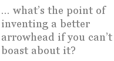

Have you ever managed to find a satisfactory answer to the questions “What is poetry” and “Why is poetry important”? I’ve been looking around and there do seem to be a lot of answers to these questions on offer in the supermarket of ideas, but none of them have really grabbed me by the wallet and said: “Buy Me!”
My problem with most of these brands is that they’re too — well — narrow, simplistic, pretty. I see canned answers full of unlisted assumptions, processed to appeal to the intellectual palette. You open them up and pour them onto the dish and they satisfy the questing stomach for a meal or two. But they’re not the whole story, and it’s the whole story of poetry that I’m after.
Now I have to warn you, if you’re the sort of person who likes to shop at the Creationist Corner Shop, you’re not going to be able to take my answers seriously. I’m sorry, but that’s the way it is. I don’t believe poetry is a gift from God, nor do I believe that poetry is the music of the spheres or some other esoteric explanation of cosmic awareness. Please feel free to take your custom elsewhere — I’ll not be offended.
If, however, you’re still interested in sampling the results of my quest then I’m happy to serve you up a feast.
Imagine a swamp ...
The bonobo is a little chimpanzee that lives in the jungles and swamps of West Africa. It is in many ways very similar to our ancestors a million years or so ago. It lives in family groups, it adores sex, it’s clever enough to know about co-operation and lying. If there is a difference between today’s bonobo and our ancient ancestors, then it’s probably something simple and yet fundamental: at some point our ancestors learned to talk.
Many animals know how to communicate, though mostly at a very simple level: This is me! Who are you? Come here! Keep out! Danger! Food! Fuck me! Animals that live in social groups may develop more subtle, nuanced forms of communication — raised eyebrows and bared fangs, touch and scent. I’ll groom you if you fetch me fruit. Where have you been? I know you’re lying to me!
At some point in the evolution of our species, our ancestors took communication to a new level — they developed language. This is no easy thing to do, and there are many competing theories about how it happened. What we do know is that several things were happening at the same time: physical adaptions such as the changes in our throat which make speech possible (which incidentally leave us far more vulnerable to choking on food) were accompanied by increased brain size, changes in diet, changes in the environment.
We may have worked out how to make flint tools and control fire before we learned to gossip as we knapped and cooked, but language probably allowed people to develop and innovate — what’s the point of inventing a better arrowhead if you can’t boast about it?
What’s that you said?
Language is a stunning evolutionary adaption. It allows people to develop a personal history and share that history with others. It’s a practical tool for sharing information, but it’s also a very effective tool for controlling others, for debating options, for making sense of the world around us. With the help of language, we can begin to understand why things happen, how they happen and what to do to prevent that pesky sabre-tooth tiger eating Aunt Maud.
Language is so important to humans that not only are we willing to risk choking for the chance to chat, we even delay our baby’s development until they’ve grasped the essentials of language. No other species carries its young around for the best part of two years before letting them walk; zebra foals are on their hooves within minutes. You may think this is a bit lazy of us, but in fact babies are working very hard (even while they’re in the womb) — learning everything they need to know about how to talk.
What’s more, the need to learn a language is innate. A child will attempt to learn to talk even under the most inauspicious circumstances. A good example of this is the Nicaraguan Sign Language — in 1977 deaf children in Nicaragua were, for the first time, bought together in a school for the deaf. There, without the help of adults, the deaf children developed their own unique language to communicate among themselves.
But what has any of this got to do with poetry? Simply this: in every language so far investigated (that I know of), there is poetry — a register of speech which is recognised by the speakers of a language as somehow special, different from everyday discourse.
Most people ask “What is poetry?”. Maybe a better question would be: “Why does every human language have poetry within it?”
Art and the descent of man
If you accept that language is an evolutionary trait, then it’s a small step to accepting that poetry must also have some evolutionary advantage. I have no proof, but I think that advantage has everything to do with how people bond with each other, and with the wider society they live in.
Let’s try a slightly different question. Why does everybody dance? Because we enjoy moving our bodies around rhythmically? Maybe. The reason I used to make a fool of myself down the disco was because I wanted to impress people enough to have sex with me. Now that may not be the driving force behind a ballet dancer’s training regime and performance, but for most of the world’s population dance is closely associated with bonding — either with other people on an individual level or as a group activity.
Dancing is not something that happens in the office, or while you’re working in a field. It is something separate from normal everyday activity. It is a time when people come together to enjoy themselves, to have some fun, to bond. For some societies specific dances are performed at specific times — rain dances, fertility dances, wedding receptions. Dancing does not help people gather food, or defend against threats, or build shelters. It helps people bond.
What about the visual arts — say pottery. Now dishes are dishes and cups are cups, but some dishes and some cups are more valued than others. If you’re going to give someone a dish as a present, you want it to be different from run-of-the-mill crockery — a finer design, a better quality clay. And giving a person such a present is a way of making a bond with that person, a more permanent way of saying “thank you for being a friend” or “I still love you” or “remember me”.
Now sharing a dance is fine, and a gift plate is very well and good. But sometimes you have to make those connections with other people through words. Special words. Poetic words. Because dances are a moment in time and plates are objects, but poems are wrought from language and language is what makes people human. A poem can be the greatest gift of all.
I made this poem for you
There are times in people’s lives when they feel a need to tell other people how they feel. And the only appropriate way to do it is in the form of a poem. When the planes flew into the World Trade Centre, when Princess Diana died in a tunnel in Paris, when the Challenger spacecraft blew up, when two little girls were murdered in Soham — millions of people took pen to paper and wrote poems. Why? Because they had to. It was the only way they knew how to respond. Many poems no doubt remained in notebooks; many more were put on display, or shared with friends, relatives, even the victims’ relatives.
We all know that poetry is important. We learn about language from nursery rhymes and lullabies. We discover the power of poetry through schoolyard chants. In many ways our views of the society we live in are formed by the poems (and songs) used to describe that society. Dana Goia wrote that real poetry can be found among the cowboys and urban rappers. But rap means nothing to a high plains cowboy — they live in a different environment, have different sets of values — as shown by their different body of poetry.
Poetry can help build empires. But it can also build personal relationships. Giving someone you love — or would like to love — a poem is a great gift. If the poem is written specially for that person then the gift is greater still, as if the author is saying: here’s a piece of me I want you to have. And if that other person rejects those few scribbles on a bit of paper, it can leave the writer distraught.
Poetry isn’t just important: it’s powerful, too.
Can poetry die?
If you’ve spent any time investigating the online poetry communities, you’ll be aware that there’s an awful lot of poetry about. You’ll also notice that an awful lot of that poetry seems to be the same few poems — the “I love you” poem, the “I hate you” poem, the “dead cat” poem (there are others, but I’m trying to stick to the rhetorical rule of three) written over and over again, with little in the way of variation. And yet each version of the poem is unique to the person who wrote it and any attempt to criticise it will make that person want to rip your eyes out.
On a much larger scale, nation states each have a body of poetry which appears to be beyond reproach. For instance in my Nation State (Anglo-Saxon England) the works of Shakespeare are sacrosanct, the rites of passage are marked by recitations from the Book of Common Prayer and every November schoolchildren across the land get to stand outside to listen to a poem by Rupert Brooke — “If I should die, think only this of me: / That there’s some corner of a foreign field / That is for ever England ...”.
The latter set of poems — the national canon, if you like — inform how the former set of poems are shaped. And the former set of poems are almost invariably a poor imitation of the latter, often (but not always) because the writers of those poems have little experience of writing poetry.
So how does a poem enter a nation’s (or a group’s) canon? How do standards get set? Why are some poems considered better than others?
It’s at this point that we come back to my first metaphor. There are many people who have offered many different answers to these questions — choose your preferred brand and queue at the checkout to pay.
What most of these answers lack, in my view, is the big, biological and socialogical perspective. Poetry is not an object, a thing, a dying artform. My argument is that poetry is an integral part of language — all languages. Poetry has evolved alongside the wider language as a method of connecting people on an individual level and at the same time identifying individuals as part of a group or tribe.
Poetry is part of our genetic heritage — it will only die when Homo sapiens — the monkeys who learned to sing — dies. Or evolves into something new, of course.